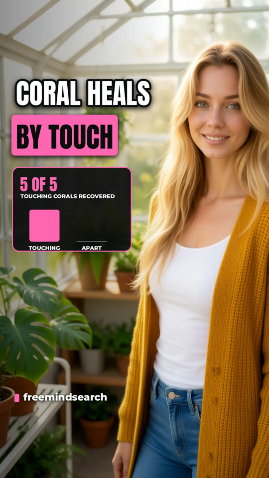

Story
Bleached coral healed by touching a healthy twin
Stanford researchers found that bleached coral fragments recovered when touching a healthy fragment from the same colony, while those kept apart died. Algae crossed over through tiny channels where the tissues fused. It works only between genetic copies and doesn't stop heatwaves, so it is not a reef-scale fix yet.
Watch on FacebookWatch on InstagramWatch on TikTokWatch on YouTube
If every sick coral needed a healthy twin, how would you save a whole reef?
Sources
- Rapid coral bleaching recovery via symbiont transfer from healthy corals (Science Advances, 2026): https://www.science.org/doi/10.1126/sciadv.aeh1580
- Euronews, Bleached corals recover in record time after touching healthy clones: https://www.euronews.com/2026/10/15/theyre-not-dead-yet-bleached-corals-recover-in-record-time-after-touching-healthy-clones
- Science news, Coral can heal rapidly from bleaching if it touches a clone: https://www.science.org/content/article/coral-can-heal-rapidly-bleaching-if-it-touches-clone
- NOAA, What is coral bleaching: https://oceanservice.noaa.gov/facts/coral_bleach.html
Made with AI: the presenter, voice and visuals are AI-generated. Every story is researched and fact-checked by a person, with its sources listed.